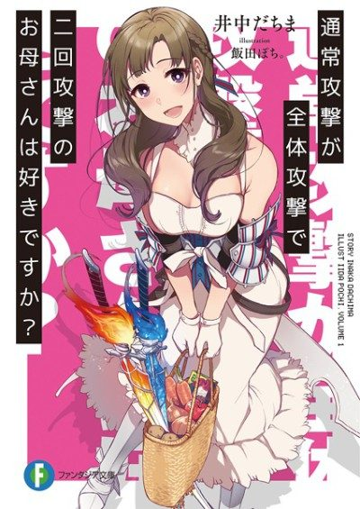
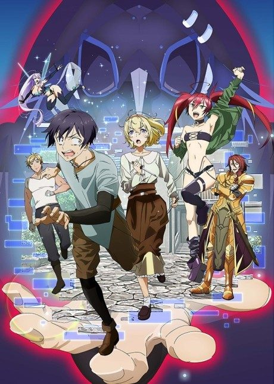

Do You Love Your Mom and Her Two-Hit Multi-Target Attacks?
通常攻撃が全体攻撃で二回攻撃のお母さんは好きですか？
After the anime, read the light novel from Volume 3.
5.2AniList score
—Animeter, no votes yet
12episodes
Rate it or report where you stopped
Anime finished. Where does the story go next?
Start at Volume3
The anime covers the first two light novel volumes, so start at volume 3.
1211 end
Season 1Start reading here
More like Do You Love Your Mom and Her Two-Hit Multi-Target Attacks?
 Manga Vol. 107.3
Manga Vol. 107.3
 Novel ahead7.9
Novel ahead7.9

Unclear6.2 Unclear7.6
Unclear7.6
 Manga Ch. 1278.0
Manga Ch. 1278.0
 Unclear7.6
Unclear7.6